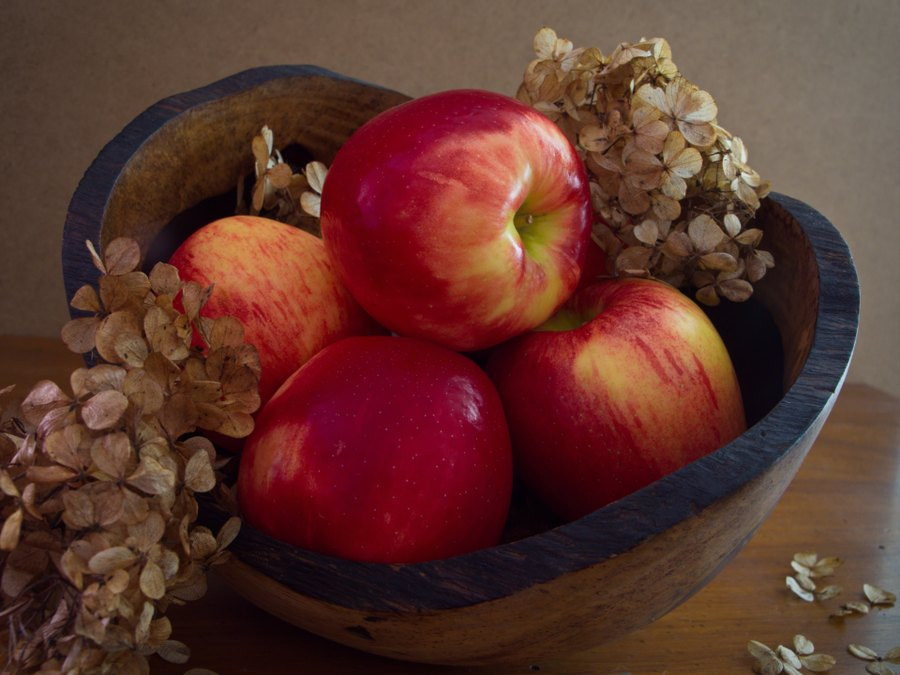

Quercetin for Brain Health: What the Evidence Really Shows
Quercetin is one of the most abundant antioxidants in the human diet, hiding in onions, apples, and tea. It shows real promise in the lab. The human evidence for memory is thinner. Here's the honest picture.

Key takeaways
- Quercetin is a flavonoid antioxidant found in onions, apples, capers, berries, kale, and tea.
- Lab and animal research is promising: it reduces oxidative stress and neuroinflammation, two drivers of cognitive decline.
- Human evidence for memory is limited. Well-designed trials in people are few, and results are mixed.
- Absorption is low. Quercetin from food is poorly absorbed, which complicates translating lab doses to real life.
- Food first. Eating quercetin-rich plants is safe and sensible. High-dose supplements need a doctor's input.
Quercetin belongs to a family of plant compounds called flavonoids, and it's one of the most common antioxidants people eat without ever knowing its name. It gives red onions their color and shows up in apple skin, kale, berries, and your afternoon cup of tea. In test tubes and in animals, quercetin does impressive things. It mops up free radicals, calms inflammation, and appears to shield neurons from certain kinds of damage. That has made it a popular ingredient in "brain health" supplements. The important question is whether those laboratory effects translate into real cognitive benefits for people. On that, the science is more cautious than the marketing.
What is quercetin and how might it help the brain?
Chemically, quercetin is a flavonol. Its value to the brain, in theory, rests on two mechanisms that researchers take seriously. First, it's a strong antioxidant. The brain burns a huge amount of oxygen and is unusually vulnerable to oxidative stress, the cellular wear that accumulates as reactive molecules damage fats, proteins, and DNA. Antioxidants like quercetin can neutralize some of those molecules. Second, quercetin appears to dampen inflammation. Chronic neuroinflammation is now considered a contributor to Alzheimer's disease and other forms of decline. In cell and rodent studies, quercetin reduces markers of both oxidative stress and inflammation in brain tissue, and some animal models show better memory performance after supplementation. That's a plausible biological story. It is not the same as proof in humans.
Does quercetin actually improve memory in people?
Here's where honesty matters. The strong, consistent human trials just aren't there yet. A number of studies have tested quercetin for other outcomes, such as blood pressure, exercise recovery, and allergy symptoms, with modest and mixed results. Direct, high-quality trials measuring memory or cognitive function in healthy adults are scarce, and the few that exist are small or short. Some broader research on flavonoid-rich diets is encouraging: large observational studies link higher flavonoid intake, including quercetin, to a lower risk of cognitive decline and dementia over many years. But observational studies can't prove cause. People who eat more flavonoids tend to eat more vegetables and fruit overall, exercise more, and smoke less. Untangling quercetin's specific contribution from that healthier pattern is genuinely hard.
So the fair summary is this. The mechanism is real and interesting. The population-level signal for flavonoid-rich diets is encouraging. But isolated quercetin has not been proven to sharpen memory or prevent decline in humans. Anyone telling you otherwise is ahead of the evidence.
COMPLEX
The memory formula we rate highest in 2026
Rather than betting on a single antioxidant, Advanced Memory Complex combines better-studied ingredients like citicoline, bacopa, and phosphatidylserine into one daily formula built for focus and recall.
See Today's Price →The absorption problem
One reason quercetin's promise is hard to cash in: your body doesn't absorb it well. Plain quercetin has low bioavailability, meaning much of what you swallow never reaches the bloodstream at a meaningful concentration. Getting enough into brain tissue to reproduce the effects seen in a petri dish is a real challenge. Supplement makers try to get around this with special forms, such as quercetin bound to phospholipids or paired with vitamin C and bromelain, which may improve uptake somewhat. Even so, this gap between lab dose and human blood level is a major reason encouraging test-tube findings so often fail to hold up in people. Keep it in mind whenever you see a bold claim built on cell studies.
Which foods are richest in quercetin?
If you want quercetin, food is the easy, safe route. The most concentrated everyday sources are red and yellow onions, where much of the quercetin sits in the outer layers. Capers top most charts by weight, though few of us eat them in quantity. Apples are a reliable source, especially the skin, so peeling them throws much of it away. Other good options include kale, broccoli, berries, red grapes, and black and green tea. A varied, colorful plant diet delivers quercetin alongside hundreds of other beneficial compounds that likely work together. That synergy is one argument for food over isolated pills. For more on eating for cognition, see our guides to the best brain foods and the Mediterranean diet and memory.
Dosage, safety, and interactions
A typical diet supplies somewhere around 10 to 25 mg of quercetin daily. Supplement trials have used far more, commonly 500 to 1,000 mg per day, sometimes split into two doses. There's no agreed optimal dose for brain health, because the trials to establish one don't exist. Short-term use at these doses is generally well tolerated, though some people report headaches, stomach upset, or tingling in the hands and feet at the high end. Long-term safety at large supplemental doses hasn't been thoroughly studied. Quercetin also interacts with medications. It can affect enzymes in the liver that process many drugs, and it may interact with certain antibiotics and blood thinners. If you take prescription medication, are pregnant or nursing, or have a health condition, talk to your doctor before starting a quercetin supplement. This is standard advice for any supplement, and it applies here.
Should you take quercetin for your brain?
For most people, the sensible move is to eat quercetin-rich foods as part of a broadly healthy diet and skip the isolated high-dose supplement until better human evidence arrives. There's little downside to more onions, apples, and tea, and plenty of upside beyond quercetin alone. If you're drawn to a supplement, treat it as one small, unproven piece of a much bigger picture. Sleep, exercise, blood pressure control, and mental engagement have far stronger evidence behind them. For the full evidence-based approach to protecting memory, start with our pillar guide on how to improve your memory. And if you're comparing brain formulas, our roundup of the best memory supplements of 2026 weighs the ingredients that actually have human data behind them. Always run new supplements past your physician first.
Frequently asked questions
Is quercetin good for the brain?
Quercetin is an antioxidant and anti-inflammatory plant compound, and laboratory and animal studies suggest it may protect brain cells from oxidative stress and inflammation. However, strong human trials showing it improves memory or prevents cognitive decline are still limited. It's reasonable to eat quercetin-rich foods as part of a healthy diet, but the evidence doesn't yet support it as a proven brain treatment.
What foods are highest in quercetin?
The richest common sources are red and yellow onions, apples (especially the skin), capers, kale, broccoli, berries, red grapes, black and green tea, and red wine. Onions and capers are among the most concentrated. Eating a varied plant-rich diet is the most reliable way to get quercetin along with hundreds of other beneficial compounds.
How much quercetin should I take?
A typical Western diet provides roughly 10 to 25 mg of quercetin per day. Supplement studies have used 500 to 1,000 mg daily, often split into two doses. There is no established optimal dose for brain health, and long-term safety at high supplemental doses isn't fully characterized. Talk to your doctor before taking quercetin supplements, especially if you take medications, since it can affect how some drugs are metabolized.
Does quercetin have side effects?
Quercetin from food is considered safe. Supplemental doses are generally well tolerated for short periods, but high doses may cause headache, stomach upset, or tingling in the extremities in some people. Quercetin can interact with certain medications, including some antibiotics, blood thinners, and drugs processed by the liver. Check with a healthcare provider before starting a supplement.
Looking for brain support with real evidence?
Single antioxidants rarely tell the whole story. See the memory formulas our editors rate highest for 2026, built around better-studied ingredients.
See the Top 5 Memory Formulas →Related: Best brain foods · Mediterranean diet and memory · Citicoline for memory · Best memory formulas of 2026